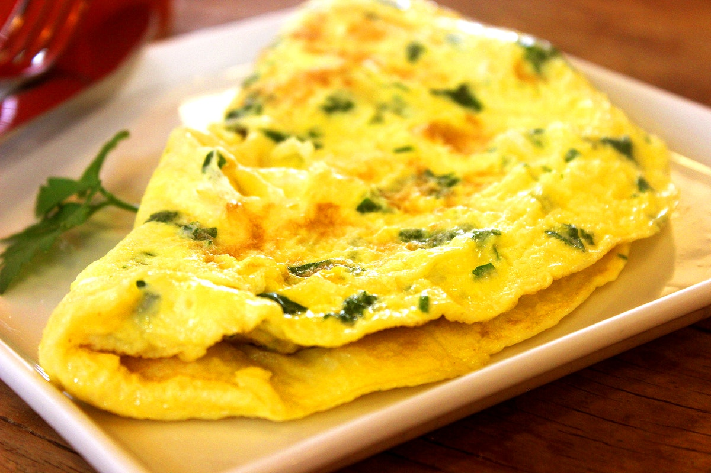

Omelet Recipe

Description
An omelet is a savory dish made from beaten eggs quickly cooked in a
frying pan, sometimes folded around a filling such as cheese, vegetables,
or meat. Omelets can be served for breakfast, lunch, or dinner.
Ingredients
- 2 eggs
- 1 tablespoon milk
- Salt and pepper to taste
- 1 tablespoon butter or oil
Steps
- Whisk together the eggs, milk, salt, and pepper in a bowl.
- Heat the butter or oil in a nonstick skillet over medium heat.
-
Pour the egg mixture into the skillet and let it cook for a few seconds
until the bottom begins to set.
-
Using a spatula, gently lift the edges of the omelet and tilt the
skillet so that the uncooked egg mixture can flow underneath.
-
Continue cooking until the omelet is set on the bottom and cooked
through.
- Add your desired fillings to one half of the omelet.
- Fold the omelet in half and slide it onto a plate.
-
Serve immediately with your favorite toppings, such as salsa, sour
cream, or avocado.
Tips
-
For a fluffier omelet, add a splash of water or milk to the egg mixture.
-
Be careful not to overcook the omelet, or it will become dry and tough.
-
You can add any toppings you like to your omelet. Some popular toppings
include cheese, vegetables, and meat.
- Omelets can be served for breakfast, lunch, or dinner.
Enjoy!